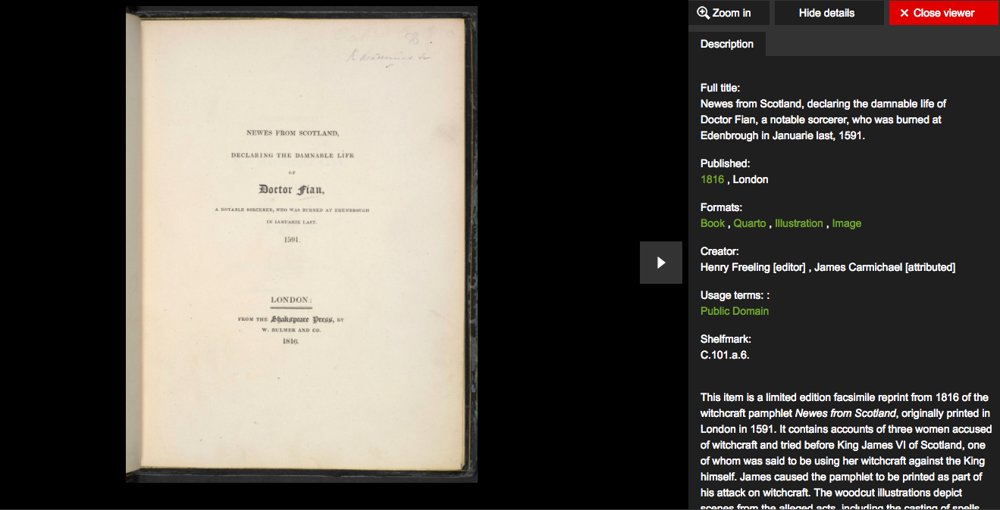

In addition from the general mass hysteria that provided much of the momentum for the Scottish witch trials, there were several events throughout the 16th and 17th century that triggered periods when accusations of witchcraft were abnormally high. This is supported by Stuart Macdonald in In Search of the Devil in Fife Witchcraft Cases, 1560-1705 as he posits that “the timing of the major hunts coincides closely with significant events, some political, some intellectual and social”.
As we can see from the timeline graph above, there are five peaks when accusations were abnormally high: the years 1590-1591, 1597, 1628-1630, 1649, and 1661-1662. These periods of high accusations are corroborated by Christina Larner, the pioneering modern scholar of Scottish witch-hunting (Robertson, 1).
1590-1591
Between 1590-1591, our data shows a total of 77 accusations, which is significantly higher than the average of 3 accusations per year in the previous decades. What triggered this two-year period of mass hysteria was the attempts to poison King James VI, and to sink the King’s ship on his voyage back to Scotland (Murray, 48).
The first witch implicated in the assassination of King James VI, Geillis Duncane, was accused of witchcraft due to her tendencies towards healing practices and her ‘witch’s mark’ (Carmichael, 11). What ensued was a series of a series of close to 70 accusations, “where the hunt moves out in a serial fashion from one accused to another” (Macdonald, 5). The principal culprits of the plot, Agnes Sampson and Dr. John Fian were then tortured for their confessions (Murray, 55).

Witchcraft pamphlet: News from Scotland, 1591
According to the confessions of Agnes Sampson in Newes from Scotland, she gathered venom from a black toad to be applied onto “any parte or peece of foule linnen cloth, that had appertained to the Kings Maiestie” in an attempt to poison the King, and summoned “winde contrarye and altogither against his Maiestie: and further the saide witche declared, that his Maiestie had neuer come safelye from the Sea” in an attempt to sink the King’s ship on his voyage back to Scotland (Carmichael, 17).
1597
From our timeline graph, there were 111 accusations made in the year 1597 alone; not only was this higher than the average number of accusations per year, it was also higher than that during the events in 1590-1591.
In the larger European context, there began a larger shift towards creating a morally upright society that aligned with Western religious values. This stemmed from the upper class that was beginning to become more and more educated. According to Macdonald, the 10 educated upper classes started the shift of having the “neighborhood witch” be a friendly and important member of society into a detestable figure that was demonic in nature. In the early years, we see how societal and educational shifts that stemmed from the upper class paired with societal tensions of religion and agriculture to create a hostile environment for anything that deviated from the accepted norm.
According to Goodare in The Scottish Witchcraft Panic in 1597, while the witch-hunt in 1597 is the least documented of the five Great witch-hunts in Scotland, the mass hysteria could be attributed to the rift in the relationship between the Presbyterian church and the king. This difference in ideals separated both facets of life in Scotland, causing strife in the political and religious organizations of the people. Furthermore, Goodare also highlights the famine between the years of 1594 and 1599 which led to mass starvation leading to social tension in the communities. In hand with this, the disease known as ergotism was affecting communities who had risked eating contaminated rye, which may have led to hallucinations and convulsions that could have been interpreted as demonic possession as well.
1628-1630
For the years 1628-1630, looking at the timeline graph, we can remark that the peak was higher than any preceding peaks, with a total of 179 individuals accused of practicing witchcraft.
This could be attributed to several international and domestic factors. One of the international forces that prompted the hysteria was the “major continental witch panic” that swept Europe, which Macdonald described in The Witches of Fife: Witch-Hunting in a Scottish Shire. In the mid-1600s, Scotland was not alone in the witch hunt phenomena and was an average example of how the rest of the continent to reacted to the witchcraft and witch-hunting.
The author of Panic and Persecution: Witch-Hunting in East Lothian, 1628-1631, Elizabeth Robertson, commented that the witch-hunt in Berwick (East Lothian) had no particular triggers, and that the exact cause of it remains unclear; however, it is a perfect embodiment of the “panic model” that governed the witch-hunt in 1629. The panic model is characterized by a developing prosecutorial peak “as interest turned from prosecuting individuals accused by their neighbors to seeking out the accomplices of confessing witches” (Robertson, 11).
1649
During 1649, the number of accusations rose to nearly twice as much as the previous peak, and was higher than any preceding peak at 367 accusations. On top of the mass witch-hunting hysteria that took over Europe, which Macdonald described, the surge in accusations can be explained by a nationwide instability that was a result of political instability and food shortages.
In 1649, the foundational problems that originated in the late 1500s continued to evolve and cause chaos for the church. This was described in The Witches of Fife: Witch-Hunting in a Scottish Shire, as Macdonald explained that persecutions began “shortly after the radical Presbyterian faction took power in January”. Religious factions and the power change and dynamic between the monarch and the church continued to divide and separate the Scottish lifestyle.
Additionally, according to Goodare in Women and the Witch-Hunt in Scotland, the rising prices of food due to shortages played led to a spike in cost of living in Scotland. Coupled with the increasing divide between the monarch and the church, the soaring cost of living created nationwide instability, which compelled the churches to create order and stability within their community.
1661-1662 and Subsequent Decline
Examining the timeline of accusations, there were 233 accusations made in the year 1661. Meanwhile, the year 1662 saw the record highest number of accusations at 396 cases. Like the crisis in 1628-1630, that of 1661-1662 has not been largely researched as well.
In The Great Scottish Witch Hunt of 1661-1662, Levack suggested that one possible trigger to the events in 1661-1662 could be the “end of the Protectorate, the judicial machinery of Scotland”. As the Protectorate came to a complete halt, Scotland was mired in serious legal crisis, on top of the burgeoning economic crisis. As in 1649, the lack of a nationwide judicial system compelled locals to demand for legal action against suspected witches. This prompted a series of unwarranted arrests and unregulated use of torture to extract confessions, resulting in the highest number of accusations and death toll throughout Scottish witch-hunting history.
In his other study, The decline and end of Scottish Witch-Hunting, Levack proposed that the reasons for decline included a “greater care with which evidence was evaluated at witchcraft trials and the adherence to increasingly evidentiary standards”. This included the prohibition of torture as a means to extract confessions, and a crackdown of unauthorized arrests -- practices which were prevalent during the Great Witch Hunt of 1661-1662.
While some accusations and trials were still made after 1662, they eventually ceased only when the British statute of 1736 “officially determined that witchcraft in Scotland … was no longer a crime” (Levack, 162).